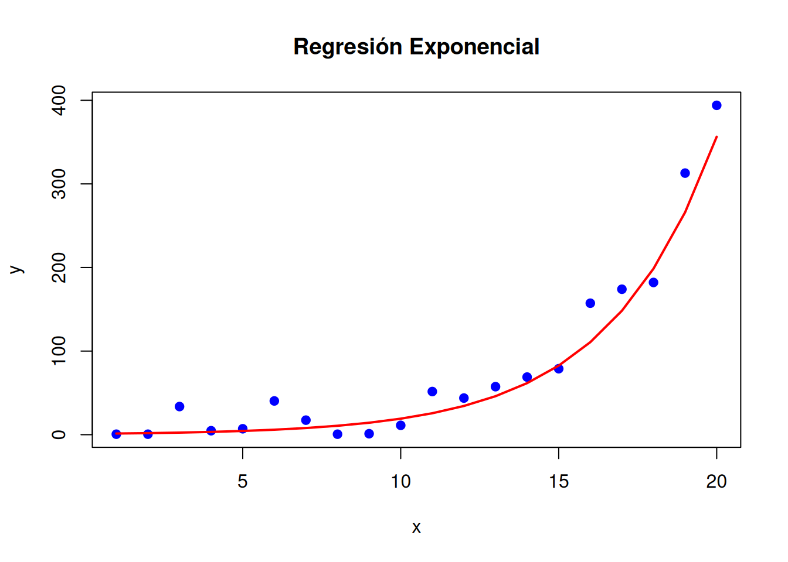
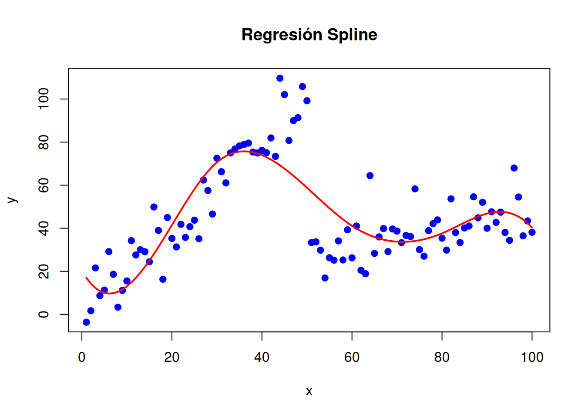
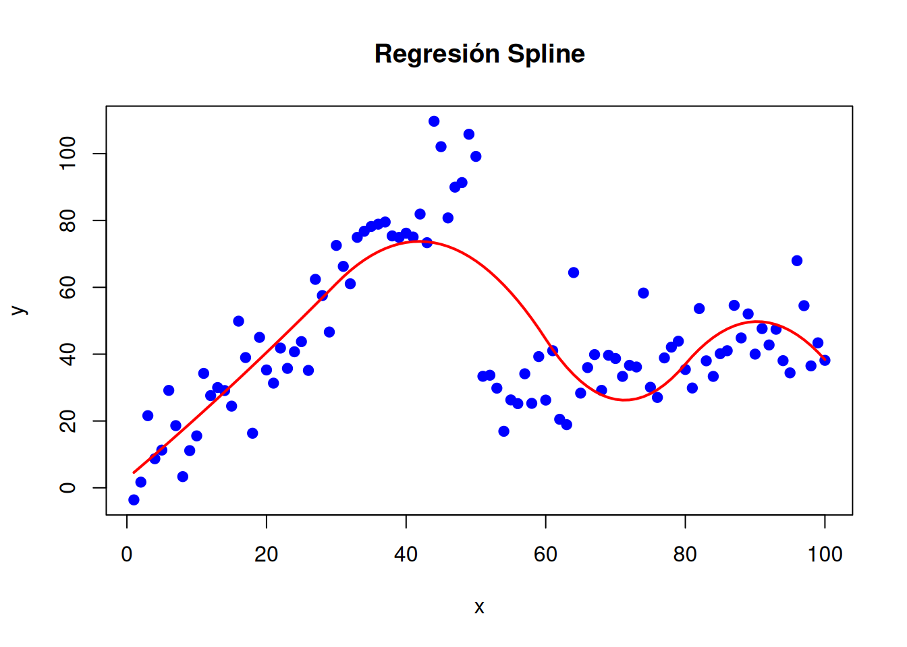

3Modelos no lineales. Transformación de variables. Ingeniería de características.
En el análisis de datos, muchas relaciones entre variables no pueden ser capturadas adecuadamente mediante modelos de regresión lineal. Aunque la regresión lineal es una herramienta poderosa por su simplicidad e interpretabilidad, existen numerosos escenarios donde las relaciones entre las variables son inherentemente no lineales.
Limitaciones de la regresión lineal:
Relaciones no lineales: En muchos casos, la relación entre las variables no es proporcional ni constante. Por ejemplo, el crecimiento poblacional o la desintegración radiactiva siguen patrones exponenciales.
Interacciones no consideradas: La regresión lineal simple no capta interacciones entre variables a menos que se incluyan explícitamente.
Sensibilidad a valores atípicos: Los modelos lineales pueden verse influenciados por outliers, afectando la precisión del modelo.
Supuestos estrictos: La regresión lineal asume homocedasticidad, normalidad de los errores e independencia, lo cual no siempre se cumple en la práctica.
Estas limitaciones abren la puerta a la necesidad de modelos más flexibles (modelos no lineales) que puedan capturar relaciones complejas entre las variables.
Además de utilizar modelos no lineales, otra estrategia fundamental es la transformación de variables. Mediante transformaciones matemáticas (como logaritmos, potencias o funciones exponenciales), es posible linearizar relaciones no lineales o mejorar la adecuación del modelo. Estas transformaciones pueden también ayudar a cumplir con los supuestos de normalidad y homocedasticidad en los modelos.
Finalmente, la ingeniería de características juega un papel crucial en la mejora del rendimiento de los modelos predictivos. Este proceso implica la creación, modificación o combinación de variables explicativas para extraer mayor información de los datos. La ingeniería de características es clave para mejorar la capacidad predictiva de los modelos, especialmente en entornos de alta dimensionalidad o con datos complejos.
A lo largo de este tema, exploraremos estos tres pilares: cómo identificar y ajustar modelos no lineales, cómo aplicar transformaciones efectivas a las variables y cómo desarrollar nuevas características que potencien el análisis y la predicción.
3.1 Modelos no lineales
Los modelos de regresión no lineal son herramientas esenciales cuando las relaciones entre las variables no pueden capturarse adecuadamente con modelos lineales. La regresión polinómica, exponencial, logarítmica y los modelos por tramos ofrecen diferentes enfoques para representar patrones complejos en los datos. Comprender cuándo y cómo aplicar estos modelos es fundamental para mejorar la precisión y la interpretabilidad en el análisis de datos.
3.1.1 Regresión Polinómica
La regresión polinómica es una extensión de la regresión lineal que permite capturar relaciones no lineales mediante la inclusión de términos polinómicos (cuadráticos, cúbicos, etc.). Aunque sigue siendo un modelo lineal en los parámetros, la inclusión de potencias de las variables independientes permite ajustar curvas en lugar de líneas rectas.
Donde \(k\) es el grado del polinomio. A medida que aumenta el grado, el modelo se vuelve más flexible y puede ajustarse a relaciones más complejas.
Este tipo de modelos son capaces de capturar curvaturas suaves en los datos. Se trata de modelos fáciles de implementar y comprender, aunque la interpretación de los coeficientes asociados a altos grados del polinomio puede ser compleja. De hecho, exite un claro riesgo de sobreajuste cuando se utilizan polinomios de alto grado.
Ejemplo
# Datos simuladosset.seed(123)x <-1:20y <-3+2* x +0.5* x^2+rnorm(20, mean =0, sd =10)# Ajuste del modelo polinómico de grado 2modelo_polinomico <-lm(y ~poly(x, 2))summary(modelo_polinomico)
Call:
lm(formula = y ~ poly(x, 2))
Residuals:
Min 1Q Median 3Q Max
-18.9643 -6.4011 -0.8541 5.8504 17.2160
Coefficients:
Estimate Std. Error t value Pr(>|t|)
(Intercept) 97.17 2.27 42.796 < 2e-16 ***
poly(x, 2)1 318.21 10.15 31.339 < 2e-16 ***
poly(x, 2)2 60.98 10.15 6.006 1.42e-05 ***
---
Signif. codes: 0 '***' 0.001 '**' 0.01 '*' 0.05 '.' 0.1 ' ' 1
Residual standard error: 10.15 on 17 degrees of freedom
Multiple R-squared: 0.9836, Adjusted R-squared: 0.9816
F-statistic: 509.1 on 2 and 17 DF, p-value: 6.778e-16
# Visualizaciónplot(x, y, main ="Regresión Polinómica de Segundo Grado", pch =19, col ="blue")lines(x, predict(modelo_polinomico), col ="red", lwd =2)
3.1.2 Modelos de Regresión Exponencial y Logarítmica
Cuando la relación entre la variable dependiente y la independiente sigue un crecimiento o decaimiento exponencial, o una relación logarítmica, los modelos lineales tradicionales no son suficientes. En estos casos, se pueden utilizar transformaciones exponenciales o logarítmicas.
Regresión Exponencial
Este modelo es útil cuando la variable dependiente crece (o decrece) a una tasa proporcional a su valor actual.
\[
Y = \beta_0 e^{\beta_1 X} + \varepsilon
\]
Este modelo puede linearizarse tomando el logaritmo de la variable dependiente:
\[
\log(Y) = \log(\beta_0) + \beta_1 X + \varepsilon
\]
Regresión Logarítmica
Útil cuando la tasa de cambio de la variable dependiente disminuye a medida que aumenta la variable independiente.
\[
Y = \beta_0 + \beta_1 \log(X) + \varepsilon
\]
Ejemplo
# Datos simulados para un modelo exponencialset.seed(123)x <-1:20y <-exp(0.3* x) +rnorm(20, mean =0, sd =20)# Asegurarse de que todos los valores de 'y' sean positivos para aplicar logaritmoy[y <=0] <-min(y[y >0]) *0.5# Reemplaza valores no positivos por un valor pequeño positivo# Ajuste del modelo exponencial (transformación logarítmica)modelo_exponencial <-lm(log(y) ~ x)# Resumen del modelosummary(modelo_exponencial)
Call:
lm(formula = log(y) ~ x)
Residuals:
Min 1Q Median 3Q Max
-2.9269 -0.1997 0.1612 0.3837 2.6104
Coefficients:
Estimate Std. Error t value Pr(>|t|)
(Intercept) 0.02791 0.59598 0.047 0.963
x 0.29240 0.04975 5.877 1.45e-05 ***
---
Signif. codes: 0 '***' 0.001 '**' 0.01 '*' 0.05 '.' 0.1 ' ' 1
Residual standard error: 1.283 on 18 degrees of freedom
Multiple R-squared: 0.6574, Adjusted R-squared: 0.6384
F-statistic: 34.54 on 1 and 18 DF, p-value: 1.45e-05
# Visualizaciónplot(x, y, main ="Regresión Exponencial", pch =19, col ="blue", ylab ="y", xlab ="x")# Predicciones para los mismos valores de xpredicciones <-predict(modelo_exponencial, newdata =data.frame(x = x))# Convertir predicciones a la escala original (exponencial inverso del log)lines(x, exp(predicciones), col ="red", lwd =2)

3.1.3 Regresión Spline y modelos basados en Segmentos
Los splines y los modelos segmentados son técnicas que permiten ajustar relaciones no lineales mediante la división de los datos en segmentos y el ajuste de funciones lineales o polinómicas en cada segmento. Estos métodos son especialmente útiles cuando la relación entre las variables cambia en diferentes rangos de los datos.
Modelos por tramos (Piecewise Regression)
En este enfoque, se ajustan diferentes regresiones lineales a distintos rangos de la variable independiente. A diferencia de los splines, las transiciones entre segmentos no necesariamente son suaves.
Estos modelos permiten capturar relaciones complejas con menor riesgo de sobreajuste en comparación con polinomios de alto grado.
Splines
Los splines son una poderosa herramienta en el análisis de regresión para modelar relaciones no lineales entre variables. A diferencia de los modelos polinómicos tradicionales, que ajustan un solo polinomio a todos los datos, los splines permiten dividir el rango de la variable independiente en diferentes tramos y ajustar polinomios separados en cada uno de ellos. Esto proporciona mayor flexibilidad para capturar patrones complejos en los datos, sin los problemas de inestabilidad y sobreajuste que pueden surgir al utilizar polinomios de alto grado.
Un spline es una función que está compuesta por múltiples polinomios por tramos que se ajustan en diferentes intervalos del dominio de la variable independiente. Estos polinomios están conectados en puntos específicos llamados nudos (knots), que marcan el final de un tramo y el inicio de otro. La principal característica de los splines es que estos polinomios están diseñados para unirse de manera suave en los nudos, asegurando que la función resultante sea continua y, en muchos casos, que sus derivadas también sean continuas.
Elementos clave
Tramos: Intervalos del dominio de la variable independiente en los que se ajusta un polinomio distinto.
Nudos: Puntos donde los tramos se conectan. Los nudos definen la estructura del spline y determinan dónde la función puede cambiar de forma.
Continuidad: Los splines están construidos para que no haya saltos abruptos en la función o en sus derivadas en los nudos. Por ejemplo, un spline cúbico asegura continuidad en la función, la primera derivada (pendiente) y la segunda derivada (curvatura).
Tipos de Splines
Splines Lineales:
Se ajustan líneas rectas entre los nudos.
Garantizan la continuidad en los puntos de unión, pero no necesariamente en la pendiente.
Son simples, pero pueden generar ángulos abruptos en los nudos.
Splines Cuadráticos:
Se utilizan polinomios de segundo grado en cada tramo.
Aseguran continuidad en la función y en la pendiente, pero no en la curvatura.
Splines Cúbicos:
Los splines cúbicos son los más utilizados en análisis de regresión.
Utilizan polinomios de tercer grado en cada tramo.
Garantizan suavidad en la función y en sus primeras dos derivadas, lo que significa que la función es continua, su pendiente es continua y la curvatura es suave.
Evitan el sobreajuste que puede ocurrir con polinomios de alto grado, proporcionando un ajuste flexible sin perder estabilidad.
A diferencia de los polinomios globales de alto grado, los splines cúbicos pueden capturar patrones complejos sin oscilar de manera excesiva entre los puntos de datos.
Los splines permiten que el modelo se adapte localmente a diferentes patrones en distintos tramos del dominio de la variable independiente.
Splines Naturales:
Son una variante de los splines cúbicos que imponen condiciones adicionales en los extremos del rango de los datos, forzando la segunda derivada a ser cero en los extremos. Esto ayuda a evitar oscilaciones no deseadas fuera del rango de los datos.
El uso de splines en regresión permite modelar relaciones no lineales de manera flexible. La elección del número y la ubicación de los nudos es un aspecto fundamental del ajuste con splines:
Número de nudos: Demasiados nudos pueden llevar a un sobreajuste, mientras que muy pocos pueden no capturar adecuadamente la relación entre las variables. El uso de técnicas de validación cruzada puede ayudar a encontrar el equilibrio adecuado.
Ubicación de los nudos: Los nudos pueden colocarse en puntos equidistantes, en cuantiles de la variable independiente, o en puntos donde se sospecha que la relación entre las variables cambia. La colocación de nudos es clave para obtener un buen ajuste. Los nudos pueden seleccionarse de manera automática (por ejemplo, en los cuantiles de la variable independiente) o manualmente según el conocimiento del problema.
Aviso
A diferencia de la regresión lineal simple, los coeficientes de los splines no tienen una interpretación directa. El enfoque se centra en la forma general del ajuste en lugar de en el valor de los coeficientes individuales.
Ejemplo
# Cargar librería para splineslibrary(splines)# Datos simuladosset.seed(123)x <-seq(1, 100, by =1)y <-ifelse(x <=50, 2* x +rnorm(100, 0, 10), 0.5* x +rnorm(100, 0, 10))# Ajuste del modelo splinemodelo_spline <-lm(y ~bs(x, knots =c(30, 60, 80)))# Visualizaciónplot(x, y, main ="Regresión Spline", pch =19, col ="blue")lines(x, predict(modelo_spline), col ="red", lwd =2)

# Cambio en la posición de los nodos# Ajuste del modelo splinemodelo_spline <-lm(y ~bs(x, knots =c(40, 50)))# Visualizaciónplot(x, y, main ="Regresión Spline", pch =19, col ="blue")lines(x, predict(modelo_spline), col ="red", lwd =2)

# Ajustamos un spline cuadrático # Ajuste del modelo splinemodelo_spline <-lm(y ~bs(x, degree=2, knots =c(30, 60, 80)))# Visualizaciónplot(x, y, main ="Regresión Spline", pch =19, col ="blue")lines(x, predict(modelo_spline), col ="red", lwd =2)
3.2 Transformación de variables
En el análisis de datos y la construcción de modelos estadísticos, no siempre es posible capturar adecuadamente la relación entre las variables independientes y la variable dependiente utilizando modelos lineales en su forma original. Aquí es donde entran en juego las transformaciones de variables, que permiten modificar la estructura de los datos para mejorar el ajuste del modelo, cumplir con los supuestos de la regresión y, en muchos casos, facilitar la interpretación.
Las transformaciones de variables son una herramienta fundamental para mejorar el rendimiento y la precisión de los modelos estadísticos. Estas transformaciones pueden aplicarse tanto a la variable dependiente como a las variables independientes.
Objetivos
Linearizar relaciones no lineales:
Muchas relaciones entre variables no son lineales en su forma original. Aplicar una transformación adecuada puede convertir una relación no lineal en lineal, permitiendo el uso de técnicas de regresión lineal. Por ejemplo, una relación exponencial \[Y = \beta_0 e^{\beta_1 X}\] puede linearizarse tomando el logaritmo de \(Y\): \[
\log(Y) = \log(\beta_0) + \beta_1 X
\]
Corregir problemas de heterocedasticidad:
La regresión lineal asume que los errores tienen varianza constante (homocedasticidad). Sin embargo, en la práctica, es común encontrar datos con heterocedasticidad (la varianza de los errores cambia con el nivel de la variable independiente). Las transformaciones pueden ayudar a estabilizar la varianza. Por ejemplo, transformar la variable dependiente \(Y\) usando un logaritmo o una raíz cuadrada puede reducir la heterocedasticidad.
Normalizar la distribución de los errores:
La regresión lineal también asume que los errores están normalmente distribuidos. Las transformaciones pueden ayudar a que los residuos del modelo se ajusten mejor a una distribución normal, lo que mejora la validez de los intervalos de confianza y las pruebas de hipótesis.
Reducir la influencia de valores atípicos:
Algunas transformaciones pueden disminuir la influencia de los valores atípicos en el modelo, haciendo que el ajuste sea más robusto.
Mejorar la interpretabilidad del modelo:
Aunque algunas transformaciones pueden complicar la interpretación directa de los coeficientes, otras pueden facilitar el entendimiento de la relación entre variables (por ejemplo, tasas de crecimiento constantes).
3.2.1 Tipos de transformaciones comunes
Existen diversas transformaciones que pueden aplicarse a los datos según el problema que se desea abordar. A continuación, se describen las transformaciones más utilizadas en el análisis de regresión.
Transformación Logarítmica (\(\log\))
Se emplea para linearizar relaciones exponenciales, reducir la heterocedasticidad, y estabilizar la varianza: - \[ Y = \log(Y) \] o \[ X = \log(X) \]
Es una transformación adecuada cuando la variable tiene una distribución sesgada a la derecha o cuando el efecto marginal disminuye con el valor de la variable (Ingresos, crecimiento poblacional, y tasas de interés, etc).
Ejemplo
# Datos simulados con crecimiento exponencialset.seed(123)x <-1:20y <-exp(0.3* x) +rnorm(20, mean =0, sd =20)# Transformación logarítmica para linearizar la relaciónmodelo_log <-lm(log(y) ~ x)
Warning in log(y): Se han producido NaNs
summary(modelo_log)
Call:
lm(formula = log(y) ~ x)
Residuals:
Min 1Q Median 3Q Max
-3.00071 -0.11760 0.04277 0.35876 1.73316
Coefficients:
Estimate Std. Error t value Pr(>|t|)
(Intercept) 1.10652 0.59757 1.852 0.083853 .
x 0.22528 0.04655 4.839 0.000217 ***
---
Signif. codes: 0 '***' 0.001 '**' 0.01 '*' 0.05 '.' 0.1 ' ' 1
Residual standard error: 1.011 on 15 degrees of freedom
(3 observations deleted due to missingness)
Multiple R-squared: 0.6096, Adjusted R-squared: 0.5835
F-statistic: 23.42 on 1 and 15 DF, p-value: 0.0002166
# Visualizaciónplot(x, y, main ="Transformación Log", pch =19, col ="blue", ylab ="y", xlab ="x")# Predicciones para los mismos valores de xpredicciones <-predict(modelo_log, newdata =data.frame(x = x))# Convertir predicciones a la escala original (exponencial inverso del log)lines(x, exp(predicciones), col ="red", lwd =2)
Transformación de Raíz Cuadrada (\(\sqrt{}\))
Se emplea para reducir la heterocedasticidad, especialmente cuando la varianza aumenta linealmente con la media: \[Y = \sqrt{Y}\] o \[X = \sqrt{X}\]
Se emplea comúnmente en conteos de eventos o variables positivas (número de llamadas, defectos, etc.).
Ejemplo
# Datos simulados con variabilidad crecienteset.seed(123)x <-1:50y <- x +rnorm(50, mean =0, sd = x)# Aplicando raíz cuadrada a la variable dependientemodelo_sqrt <-lm(sqrt(y) ~ x)
Warning in sqrt(y): Se han producido NaNs
summary(modelo_sqrt)
Call:
lm(formula = sqrt(y) ~ x)
Residuals:
Min 1Q Median 3Q Max
-3.4838 -1.3312 0.1822 1.3441 4.4278
Coefficients:
Estimate Std. Error t value Pr(>|t|)
(Intercept) 2.12028 0.53305 3.978 0.000284 ***
x 0.11955 0.01819 6.574 7.39e-08 ***
---
Signif. codes: 0 '***' 0.001 '**' 0.01 '*' 0.05 '.' 0.1 ' ' 1
Residual standard error: 1.752 on 40 degrees of freedom
(8 observations deleted due to missingness)
Multiple R-squared: 0.5193, Adjusted R-squared: 0.5073
F-statistic: 43.22 on 1 and 40 DF, p-value: 7.387e-08
# Visualizaciónplot(x, y, main ="Transformación SQRT", pch =19, col ="blue", ylab ="y", xlab ="x")# Predicciones para los mismos valores de xpredicciones <-predict(modelo_sqrt, newdata =data.frame(x = x))# Convertir predicciones a la escala originallines(x, predicciones^2, col ="red", lwd =2)
Transformación Inversa (\(\frac{1}{X}\))
Se emplea la tranformación inversa para modelar relaciones donde el efecto de la variable independiente disminuye rápidamente. \[ Y = \frac{1}{X} \]
Es especialmente útil cuando se espera que un aumento en \(X\) tenga un efecto decreciente en \(Y\) (Relaciones físicas como la ley de la gravitación, velocidad vs. tiempo en fricción, etc).
Ejemplo
# Datos simulados con relación inversaset.seed(123)x <-1:50y <-1/ x +rnorm(50, mean =0, sd =0.05)# Ajuste del modelo con transformación inversamodelo_inverso <-lm(y ~I(1/x))summary(modelo_inverso)
Call:
lm(formula = y ~ I(1/x))
Residuals:
Min 1Q Median 3Q Max
-0.100193 -0.028703 -0.005628 0.033009 0.106450
Coefficients:
Estimate Std. Error t value Pr(>|t|)
(Intercept) 0.002092 0.007633 0.274 0.785
I(1/x) 0.995869 0.042338 23.522 <2e-16 ***
---
Signif. codes: 0 '***' 0.001 '**' 0.01 '*' 0.05 '.' 0.1 ' ' 1
Residual standard error: 0.04677 on 48 degrees of freedom
Multiple R-squared: 0.9202, Adjusted R-squared: 0.9185
F-statistic: 553.3 on 1 and 48 DF, p-value: < 2.2e-16
# Visualizaciónplot(x, y, main ="Transformación Inversa", pch =19, col ="blue", ylab ="y", xlab ="x")# Predicciones para los mismos valores de xpredicciones <-predict(modelo_inverso, newdata =data.frame(x = x))# Convertir predicciones a la escala originallines(x, predicciones, col ="red", lwd =2)
3.2.2 Transformación de Box-Cox
La transformación de Box-Cox es un método que busca automáticamente la mejor transformación para estabilizar la varianza y aproximar la normalidad de los errores. La transformación se define como:
Se emplea para encontrar la transformación óptima para los datos. Se utiliza cuando no está claro qué transformación aplicar. Por ejemplo, en caso de variables continuas con varianza no constante o distribución no normal.
Ejemplo
# Cargar librería para Box-Coxlibrary(MASS)# Datos simuladosset.seed(123)x <-1:20y <- x^2+rnorm(20, mean =0, sd =5)# Verificar si hay valores negativosmin(y)
[1] -1.802378
# Si hay valores negativos, sumar una constante para que todos los valores sean positivosif (min(y) <=0) { y <- y +abs(min(y)) +1# Desplaza todos los valores para que sean positivos}# Ajuste de un modelo lineal simplemodelo_bc <-lm(y ~ x)# Aplicación de la transformación de Box-Coxboxcox(modelo_bc)
La gráfica de Box-Cox mostrará el valor óptimo de \(\lambda\), que indica la mejor transformación para los datos.
3.2.3 Consideracione sobre las transformaciones
Antes de aplicar transformaciones, es importante diagnosticar si realmente son necesarias. Existen varias herramientas para identificar problemas en los datos que pueden solucionarse con transformaciones:
Gráficos de Dispersión: Visualizar la relación entre la variable dependiente y las independientes puede revelar patrones no lineales o heterocedasticidad.
Análisis de Residuos: Un gráfico de los residuos frente a los valores ajustados debe mostrar una distribución aleatoria. Patrones sistemáticos o “abanicos” indican la necesidad de transformación. El gráfico de QQ-Plot de los residuos ayuda a evaluar la normalidad.
Pruebas Estadísticas: Pruebas de normalidad como Shapiro-Wilk para los residuos. Pruebas de heterocedasticidad como Breusch-Pagan.
Si bien las transformaciones pueden mejorar el ajuste del modelo, también pueden afectar la interpretación de los coeficientes. Es importante tener en cuenta cómo cambia el significado de los resultados:
Transformaciones en la variable dependiente:
Si aplicas \(\log(Y)\), los coeficientes representan cambios proporcionales en \(Y\).
Si aplicas \(\sqrt{Y}\), los coeficientes representan la tasa de cambio en la raíz cuadrada de \(Y\).
Transformaciones en la variable independiente:
Si transformas \(X\) con \(\log(X)\), los coeficientes indican cómo cambia \(Y\) por cada incremento porcentual en \(X\).
Si transformas \(X\) con \(\frac{1}{X}\), los coeficientes representan el cambio en \(Y\) por cada unidad de disminución en \(X\).
Revertir Transformaciones para Interpretación: Después de ajustar un modelo, es posible transformar las predicciones de nuevo a la escala original para facilitar la interpretación.